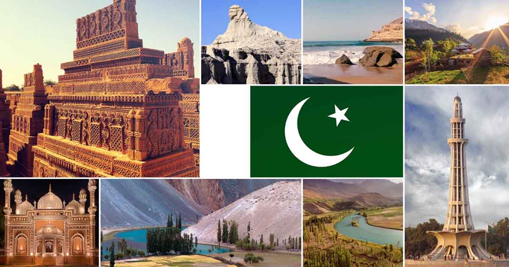

| pakistan tourism website |

NORTHAN PLACE IN PAKISTAN
NORTHAN
reathtaking Beauty in Pakistan's Northern Areas
Hunza Valley: Hunza Valley is a beautiful, mountainous valley located in the Gilgit-Baltistan region of Pakistan and is known as Heaven on Earth. ...
Naran Kaghan Valley: ...
Naltar valley: ...
Neelum Valley, Azad Kashmir: ...
Siri Paye:
18-Mar-2022
Best Places to Visit in Pakistan - Northern Areashttps://guidetopakistan.pk › 2022/03/18 › places-visit-pak...
About featured snippets
•
Feedback
Northern Areas of Pakistan - Travel Guide & ... - Swat Valleyhttps://www.visitswatvalley.com › northern-areas-pakistan
18-Jun-2021 — The Northern Areas of Pakistan are a collection of distinct administrative territories bordering each other. These northern areas are known ...
north pakistan places infor from www.visitswatvalley.com
People also ask
What are northern areas of Pakistan famous for?
Which is the most beautiful northern area in Pakistan?
Is northern Pakistan Beautiful?
What is the most beautiful part of Pakistan?
Feedback
20 Most Beautiful Places in Pakistan - Wander-Lushhttps://wander-lush.org › most-beautiful-places-in-pakis...
01-Dec-2020 — Here are 20 of the most beautiful places in Pakistan, from wild mountain passes and unreal lakes, to ornate mosques and ancient fortresses.
north pakistan places infor from wander-lush.org
10 Best And Most Beautiful Places To Visit In Pakistanhttps://traveltriangle.com › ... › International › Pakistan
01-Nov-2021 — These places to visit in Pakistan range from trails through the scenic countryside to some of the most hip cities that makes this country ...
north pakistan places infor from traveltriangle.com
Is it safe to visit Pakistan during Covid-19 times?
Which is the most beautiful city to visit in Pakistan?
10 BEST Places to Visit in Pakistan - TripAdvisorhttps://www.tripadvisor.in › ... › Places to visit in Pakistan
Popular Cities in Pakistan ; Karachi. Sindh Province, Pakistan ; Lahore. Punjab Province, Pakistan ; Islamabad. Islamabad Capital Territory, Pakistan ; Hunza.
north pakistan places infor from www.tripadvisor.in
What are the most beautiful places to travel in North ...https://www.quora.com › What-are-the-most-beautiful-pla...
The northern areas of Pakistan are very beautiful with its breathtaking sceneries. You can go to Swat valley, Nathia Gali, Azad Kashmir Naran Valley, Kaghan ...
12 answers
·
14 votes:
In addition to what my countryman Taza Gul has posted I would also like to add this link: ...
north pakistan places infor from www.quora.com
Northern Areas Of Pakistan Tour Packages | 2022https://pakistantourntravel.com › northern-pakistan-tour-p...
Pakistan Northern Areas Points of Interest · Gilgit Pakistan · Skardu Pakistan · Gilgit has many beautiful destinations like: · Hunza V